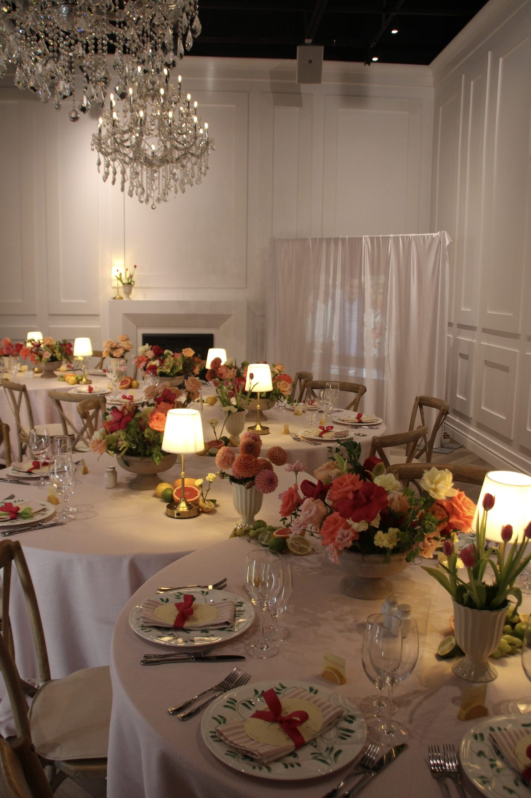

A MILESTONE IN COLOUR
Celebrating Pelusa
An 80th birthday celebration
Bright blooms, charming fruit details, and a table with as much personality as the woman it celebrated
Explore the photographs
BY SOPHIA / SELECTED CELEBRATIONSA CLOSER LOOK
The story
behind the flowers
Named after her beloved nickname, Pelusa, this 80th birthday celebration was designed to reflect a personality as vibrant and unforgettable as the woman herself. Lush, garden-inspired florals in coral, peach and yellow brought warmth and joyful colour to the table, complemented by patterned china, playful ribbons and the soft glow of table lamps. Fresh citrus and seasonal fruit were woven throughout the arrangements, adding natural texture, unexpected colour and a little whimsy. Every detail came together to honour 80 years of character, warmth and garden-inspired magic.
THE COLLECTION
In all its details
12 photographs
SOMETHING BEAUTIFUL STARTS HERE